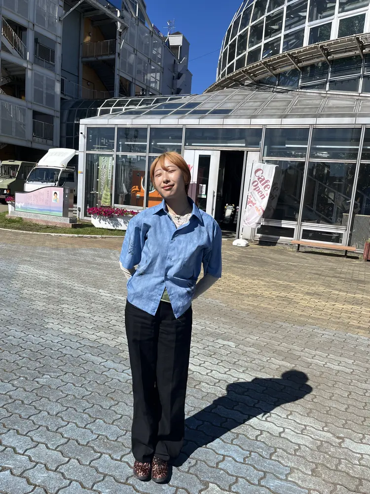
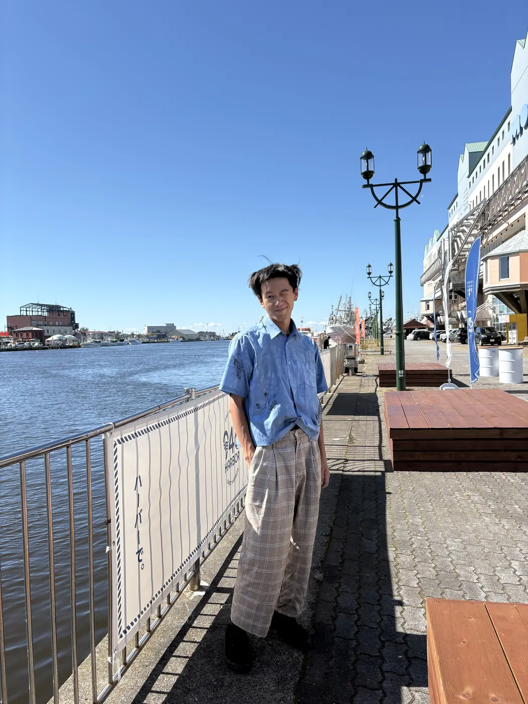
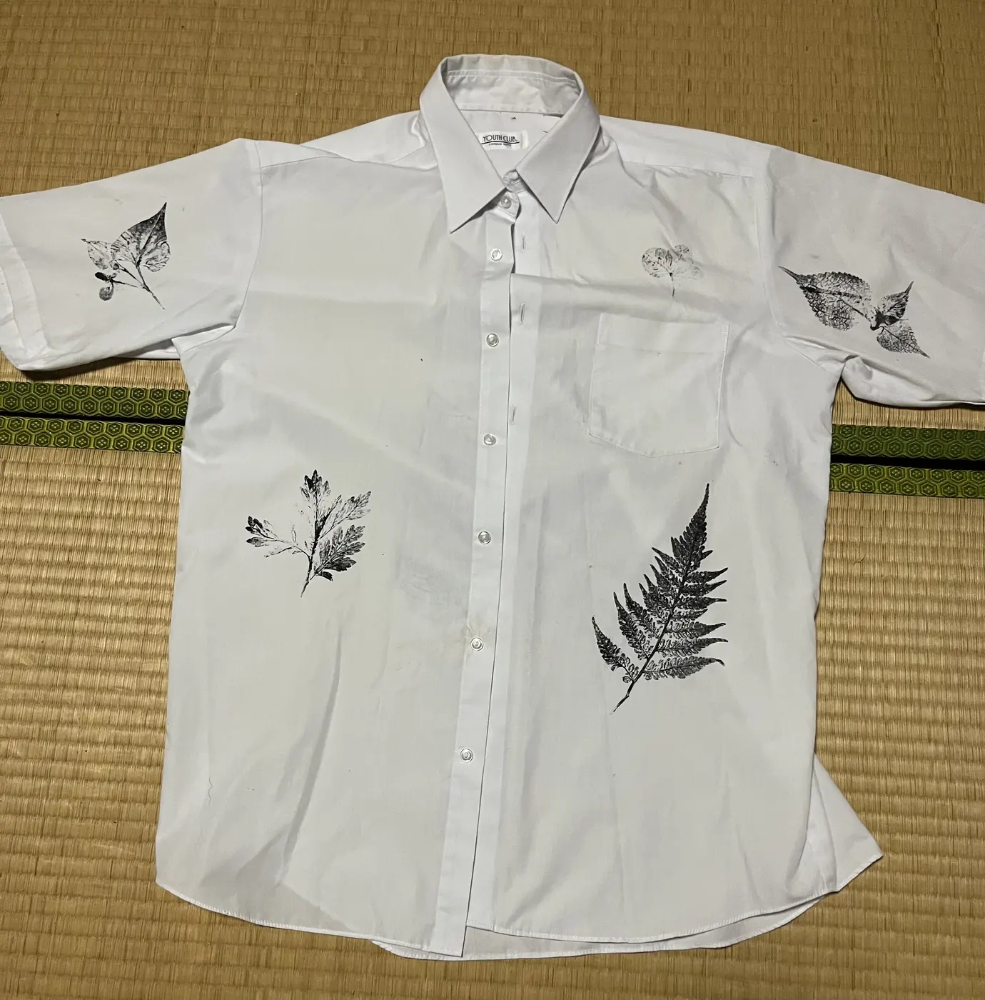

制服シャツ — 藍染＋草花拓
高校時代の制服シャツへ、小院瀬見の草花を転写し、釧路で藍染を重ねた一着です。既製の制服に土地と季節の痕跡を加えました。

- Year
- 2025年
- Place
- 小院瀬見、釧路
- Materials / Method
- 制服シャツ、植物、藍
What I tried
前面にはドクダミ、ヨモギ、クローバー、カラムシ、シダ、背面にはマタタビを使いました。裾を水平にクロップして輪郭を整えたあと、藍で全体の色をつなげています。制服の規格性を残しながら、一着だけの採取記録へ変えることを試しました。

